Complete automation for your cranberry operation
Designed, installed and supported from Warrens, WI. Pick a lamp to jump to it.
Main farm control station
Every temperature, moisture and pump reading on your farm comes back to one touchscreen controller.
- Temperature, soil moisture and pump data in one place
- Local communications with 1-minute updates
- Remote access from your phone
- Touchscreen control right on the farm
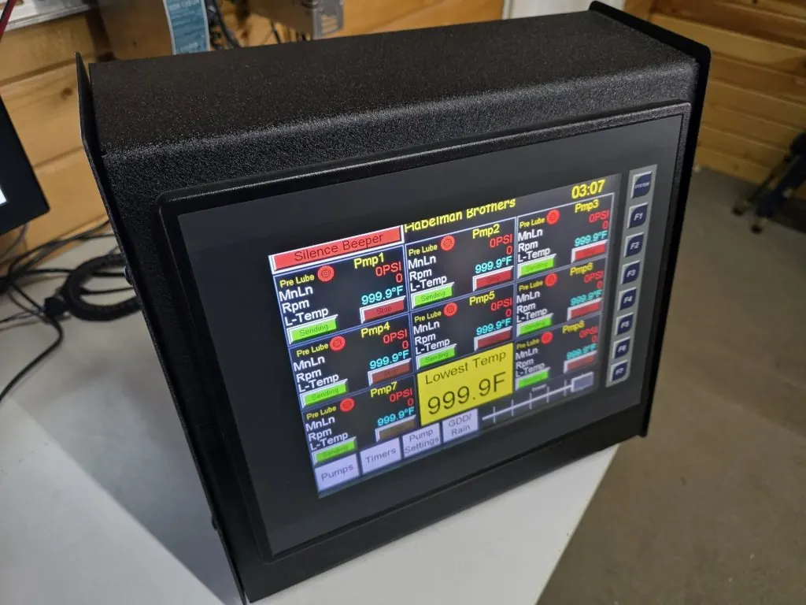
Temperature monitoring
Protect your crop from frost damage with real-time temperature data.
- Wireless probes
- Factory-calibrated
- Real-time data
- Text and email alerts
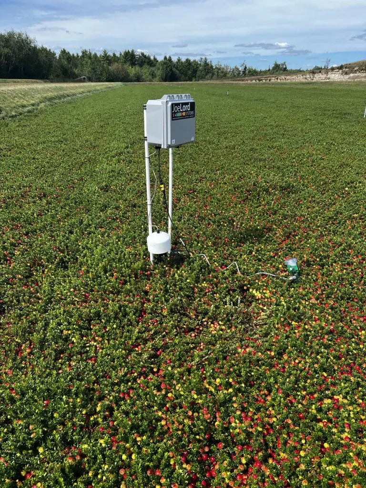
Soil moisture sensors
Stop guessing about irrigation needs.
- Accurate readings
- Multiple depths
- Wireless transmission
- Water conservation
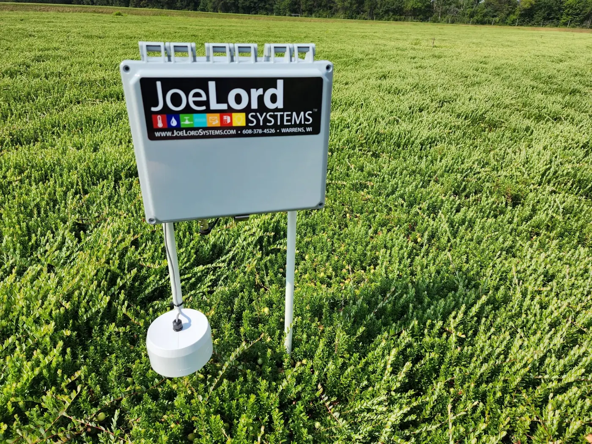
Irrigation automation
Control your pumps from anywhere with PLC-controlled systems.
- Remote start and stop
- Engine vitals monitoring
- Pressure tracking
- Auto shutdown
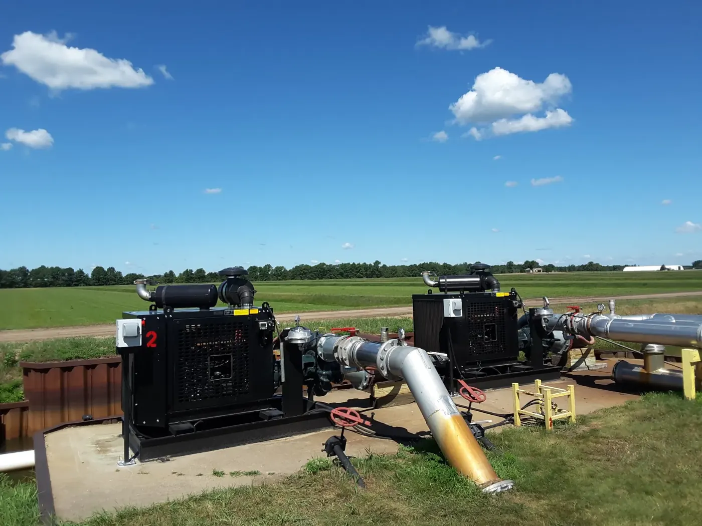
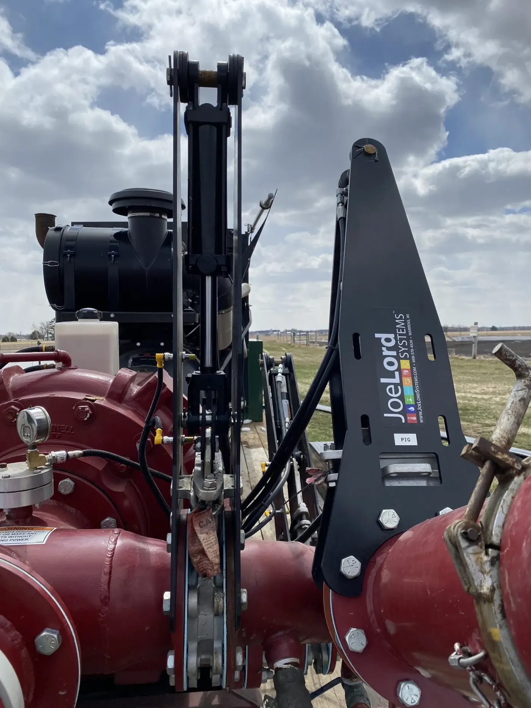
Control panel design
Custom VFD panels for electric pumps, built by our Master Electrician.
- Variable frequency drives for electric pumps
- Adjustable ramp-up and warm-up times
- Custom PLC programming
- On-site installation
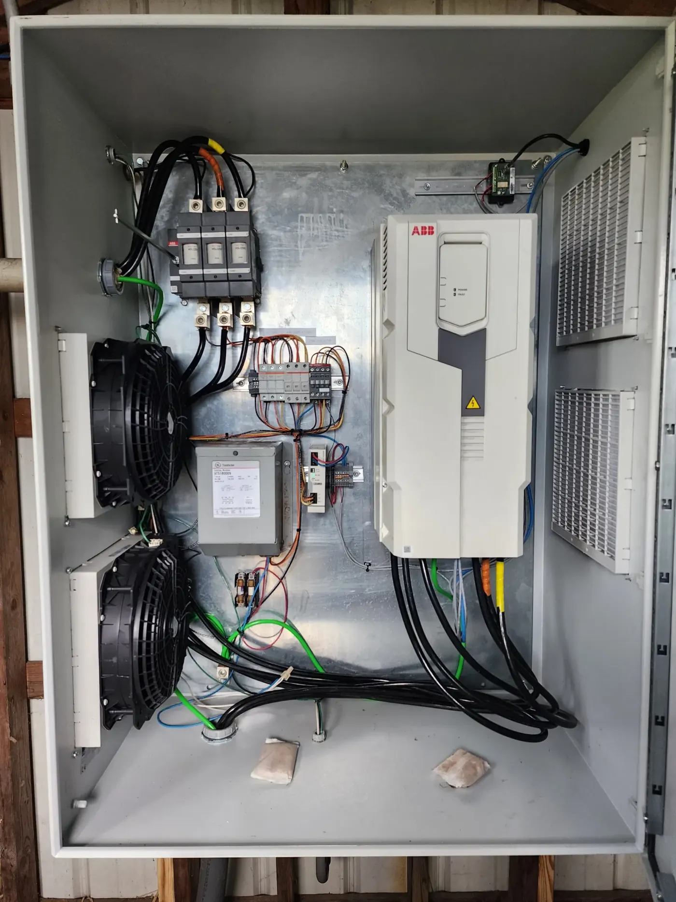
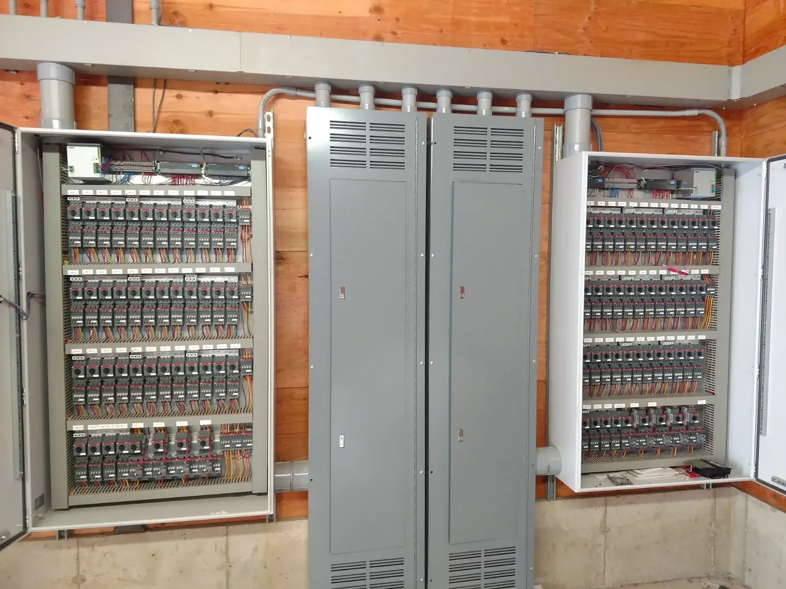
pH tracking
Know your water quality at all times.
- Continuous pH monitoring
- Ponds, reservoirs and ditches
- High and low pH alerts
- Trend history in OCS 360
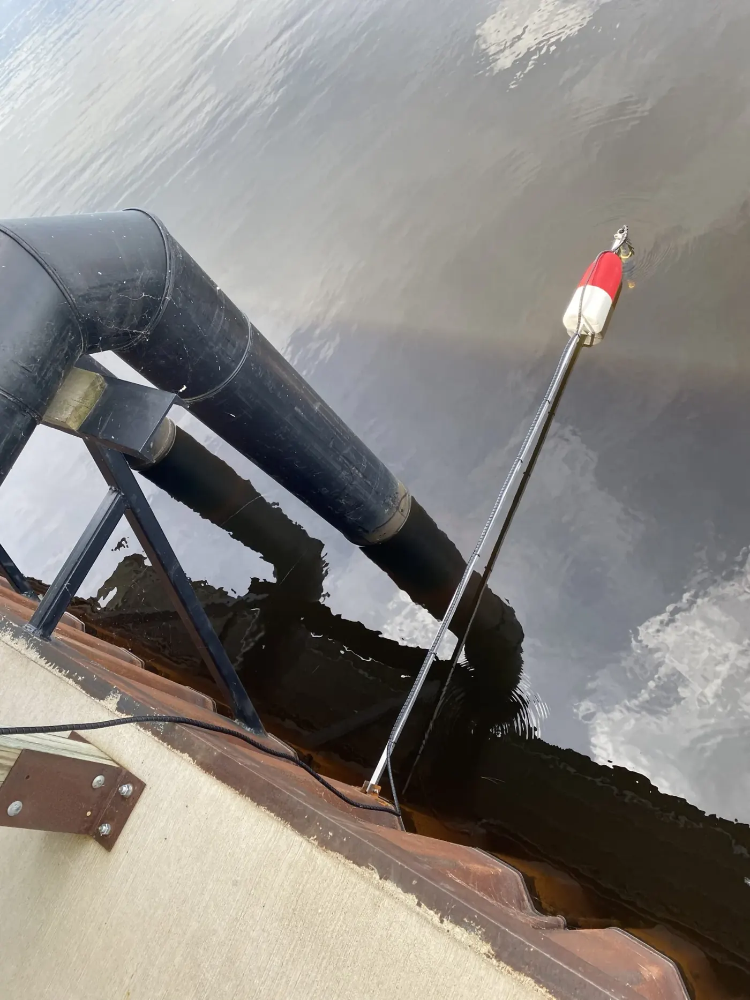
Instant alerts
Text or email notifications for any condition. Never miss a critical event.
- Alarm status in the Lord System app
- Know the moment it matters
- See problems the moment they happen
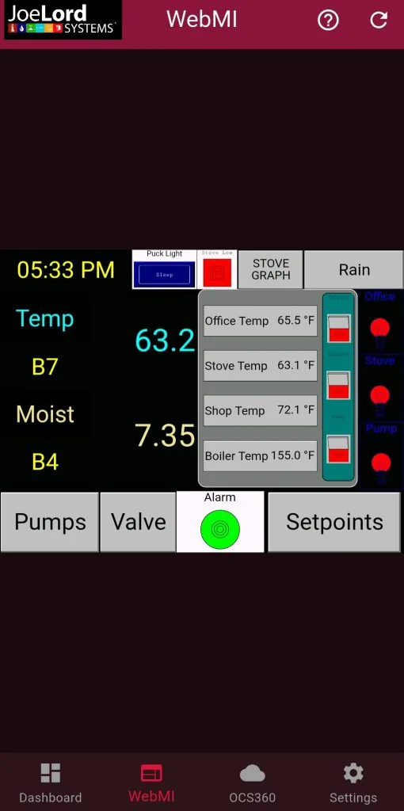
OCS 360 software
All your data in one place.
- Real-time dashboard
- Satellite map
- Historical data
- Any device
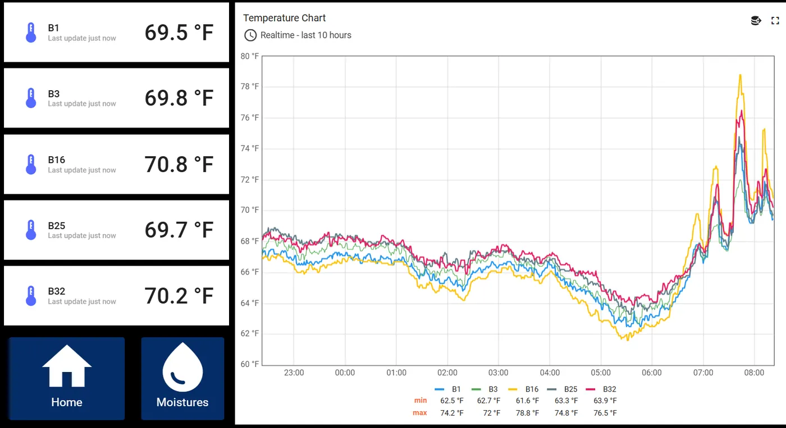
Ready to get started?
Contact us for a free consultation.
- Visit
- 19205 Bittersweet Ave, Warrens, WI 54666
- Hours
- Monday to Friday, 8:00 AM to 5:00 PM. Saturday by appointment.
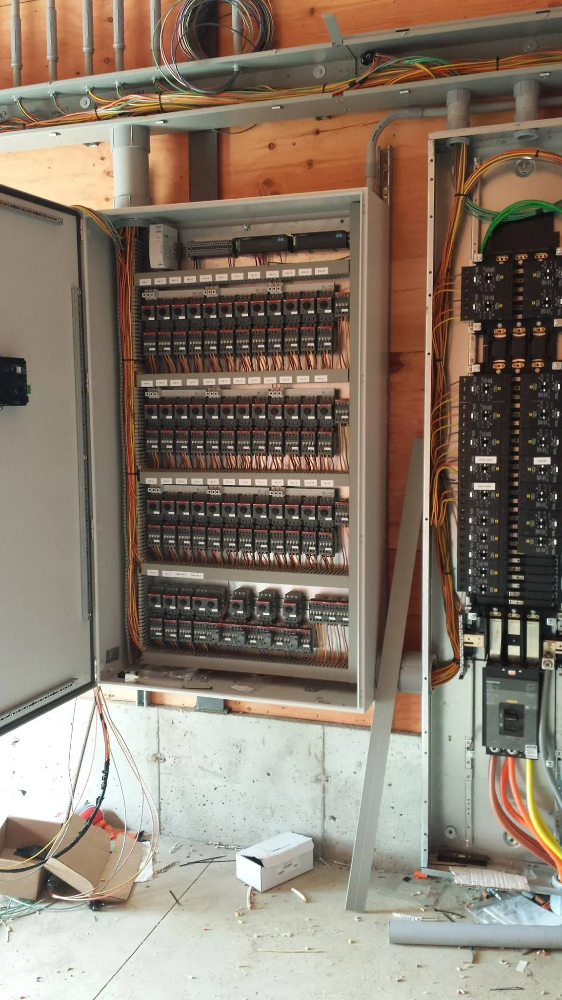